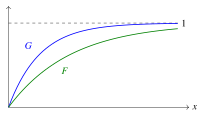
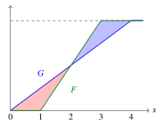
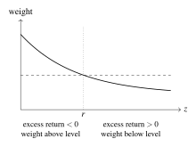

November 3, 2026
These notes document what was covered in the tutorial session, for the benefit of future TAs. They are not intended as study material for students.
Two segments. (i) The one-risky-asset portfolio problem: the agent invests a positive amount exactly when the risky asset’s expected return exceeds the safe return, and a more risk-averse agent invests less, proved by evaluating the more risk-averse agent’s first-order condition at the other agent’s optimum. (ii) Stochastic dominance: the integral definition of second-order dominance, its characterisation by adding noise, pictures of first- and second-order dominance in terms of distribution functions, and the fact that first-order dominance implies second-order dominance. The rest of the session reviewed that year’s midterm, which is not recorded here.
The portfolio comparison is the standard comparative-statics result in MWG Section 6.C, and the stochastic dominance material is MWG Section 6.D. The figures at the end are reference sketches.
The session continues Tutorial 8’s thread. The portfolio comparison is the variational argument again — evaluate one agent’s first-order condition at the other’s optimum and sign it — with Pratt’s transformation now in its original form, a concave transformation of utility rather than a convex transformation of marginal utility. The point to make explicitly is that the two proofs look alike but sign the key term by different tools. In the saving problem the first-order condition involves marginal utility alone, and Jensen’s inequality applied to the transformation does the work. In the portfolio problem the first-order condition multiplies marginal utility by the excess return, which changes sign, so Jensen is unavailable and the argument instead uses the monotonicity of the transformation’s derivative, which reweights the bad states up and the good states down. Students who see why Jensen fails here understand both proofs; students who do not will try to force Jensen on the next problem and get stuck.
The stochastic dominance segment is the other half of the same idea seen from the distribution’s side: instead of comparing agents facing one risk, compare risks facing a class of agents.
When to invest. The first-order condition at zero investment is marginal utility at the safe wealth level times the expected excess return, so its sign is the sign of the expected excess return, and with a concave objective that settles the question. The economic content deserves more than the one line it usually gets: at zero exposure, risk is a second-order effect and the expected return a first-order one, so a risk-averse expected-utility maximizer always takes some position in a favourable asset, however risk averse. Students find this surprising, and it is a useful counterpoint to loss aversion, under which it fails.
More risk averse invests less. The structure: write the more risk-averse agent’s utility as a concave increasing transformation of the other’s, evaluate the more risk-averse agent’s first-order condition at the other agent’s optimum, and show it is negative. The target sign is negative, and it is worth saying so at the outset, since it is easy to lose track of.
The key step is to read the expectation as a weighted version of the less risk-averse agent’s first-order condition, with weights given by the derivative of the transformation evaluated along the wealth distribution. Because the transformation is concave its derivative is decreasing, and because wealth increases in the risky return when the investment is positive, the weights fall as the return rises. Split the expectation at the safe return. Below it the excess return is negative and the weights are larger than their value at the safe return; above it the excess return is positive and the weights are smaller. Either way, replacing every weight by its value at the safe return can only increase the expression, and once the weight is constant it factors out and what remains is the less risk-averse agent’s own first-order condition, which is zero. Figure 3 shows the picture.
Four things to tighten relative to the board work. First, both pieces are bounded above, for the reasons just given, and the argument fails if students think one bound runs the other way. Second, the weight is the transformation’s derivative evaluated at utility, not at marginal utility; the slip is easy to make and turns into a wrong exam answer. Third, the argument needs the less risk-averse agent’s investment to be positive, since otherwise wealth does not vary with the return and the weights are constant; that case is trivial (the more risk-averse agent cannot invest less than zero), but it should be stated. Fourth, and the one piece the session did not fully develop: why signing the first-order condition at the other agent’s optimum is enough. It is enough because the more risk-averse agent’s objective is concave in the investment (utility is concave and wealth is linear in the investment), so its derivative is decreasing, and a negative value at the candidate puts the zero, and hence the optimum, to the left of it. This second-order check is what makes the first-order comparison sufficient. It is quick, but it should be done on the board rather than left implicit, and the same check closes the prudence comparison in Tutorial 8.
Second-order dominance: which definition. I gave the integral definition — the running integral of one distribution function lies below the other’s everywhere — and the characterisation that the dominated lottery is the dominant one plus noise whose conditional mean is non-positive, with a mean-preserving spread as the special case where the conditional mean is zero. The verbal version, “every risk-averse agent prefers it,” is incomplete: it should say every agent with nondecreasing concave utility. Two further points a future TA should have straight before the session, because the textbook and the general literature use different conventions.
MWG defines second-order dominance only between distributions with the same mean, in which case “nondecreasing” is redundant and the noise must be a mean-preserving spread. The definition I used is the more general increasing-concave order, which allows the dominant distribution a higher mean. The two agree when means are equal. The distinction matters for the next point: first-order dominance implies second-order dominance under the general definition, by integrating a pointwise inequality, but under MWG’s definition the implication is vacuous, because two distributions with the same mean, one first-order dominating the other, must be identical. Students who read MWG after the session will find the claim stated differently and should be warned in advance.
Also worth saying: the noise characterisation is a statement about distributions, so the dominated lottery is equal in distribution to the dominant one plus noise, not equal as a random variable.
The pictures. Two pictures do most of the teaching. For first-order dominance, the dominant distribution function lies below the other everywhere (Figure 1). The natural misreading is that a higher curve looks better, so it is worth asking the class which curve is better before saying it, then explaining that a lower distribution function means less mass at or below every threshold. For second-order dominance with equal means, the two distribution functions cross, and the condition is that the area by which the riskier one lies above the other accumulates first and is never fully paid back until the end (Figure 2). A good informal summary is that the riskier distribution function can surpass the other, but not for too long.
The two segments did not take the full session, so a future TA with no midterm to review has room to slow down on the portfolio proof. The portfolio comparison should follow the prudence comparison from Tutorial 8 as closely as the schedule allows, since the contrast between the two proofs is the main thing it teaches. If time is short, the noise characterisation of second-order dominance can be stated rather than discussed; the pictures should not be cut.
A future TA should check whether a problem set covering this material is live and, if so, treat the related material as method rather than as solutions.


